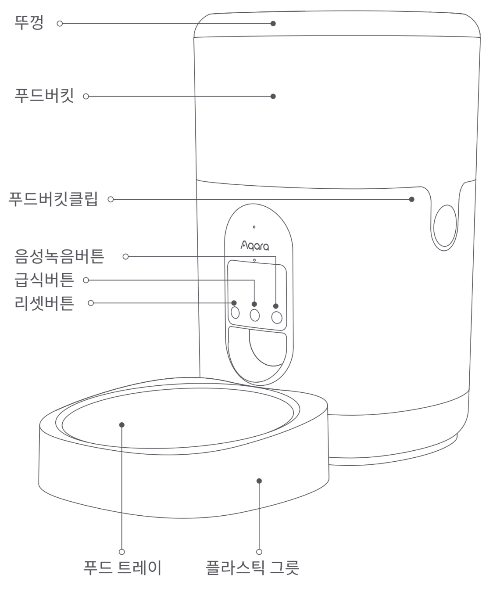

38 스마트 자동 급식기 C1
38.1 제품 소개
아카라 스마트 자동 급식기 C1은 Zigbee 3.0 통신 방식으로 작동하는 반려 동물 자동 급식기로, 언제 어디서나 정해진 시간에 설정한 양의 사료를 반려 동물에게 급여할 수 있습니다.
- 본 제품을 사용하기 위해서는 Zigbee 3.0을 지원하는 아카라 스마트 허브가 필요합니다.

38.2 주의 사항
이 기기는 8세 이상의 어린이와 신체적, 감각적 또는 정신적 능력이 떨어지거나 경험 및 지식이 부족한 분이 사용할 수 있습니다. 다만, 안전하게 기기 사용을 할 수 있도록 교육을 받고 관련 위험을 이해한 다음에 사용해야 합니다.
어린아이가 기기를 가지고 놀지 않도록 주의해 주세요.
보호자의 감독 없이 어린아이가 기기를 청소하거나 관리하지 않도록 주의해 주세요.
장치의 표시에 해당하는 안전 초저전압에서만 공급해야 합니다.
38.3 제품 구성
스마트 자동 급식기 C1 x 1, USB케이블 x 1, 푸드 트레이 x 1, 플라스틱 그롯 x 1, 제습제 x 1
38.4 사용 전 준비 사항
Wi-Fi 또는 모바일 네트워크에 연결할 수 있는 스마트폰 또는 태블릿 기기(iOS, Android 모든 가능)
Zigbee 3.0을 지원하는 아카라 스마트 허브
전원 공급 장치: 5V1A USB-A 콘센트 또는 충전 어댑터
아카라 홈앱
동봉된 제습제를 뚜껑의 제습제 슬롯에 넣어 주세요.
건식 사료를 사료통에 넣어 주세요.
(참고)
2-12mm 이내의 건식 사료만 급여할 수 있습니다.
건식 사료 급여가 가능한 3개월 이상의 반려 동물에게 사용을 권장합니다.
건식 사료만 사용할 수 있으며, 습식 자료와 함께 사용할 수 없습니다.
급식기가 넘어지는 경우 위험할 수 있으므로 벽에 기대어 고정해서 사용하는 것을 권장하며 반려 동물의 안전을 위해 테이블, 의자 또는 기타 가구에서 먼 곳에 설치해 주세요.
38.5 빠른 설정
- 해당 제품을 사용하기 위해서는 Zigbee 3.0을 지원하는 아카라 스마트 허브가 필요합니다. 스마트 허브 설명서에 따라 허브를 앱에 추가해 주세요.
38.5.1 Aqara Home 앱 다운로드
앱 스토어에서 “Aqara Home”을 검색하거나 아래 로고를 클릭해 주세요.


38.5.2 장치 추가
아카라홈 앱 오른쪽 상단의 ‘+’를 눌러 ’장치 추가’ 페이지로 이동해 주세요. ’스마트 자동 급식기 C1”을 연결할 허브를 선택하고 앱의 안내 사항에 따라 장치를 추가해 주세요. 리셋 버튼을 5초간 누르면 허브와 연결됩니다.
추가 환경 설정
‘스마트 자동 급식기 C1’ 을 성공적으로 설치한 후 장치 아이콘을 눌러 우측 상단의 ’…’를 누르시면 급여 계획, 어린이 사용 방지 등의 세부 사항을 설정할 수 있습니다.
38.5.3 전원 공급 방법
일반적인 사용 환경에서는 전원 어댑터를 통해 급식기에 전원을 공급해 주세요.
건전지를 이용하여 스마트 자동 급식기 C1을 사용할 수 있습니다. 제품 하단부의 배터리 커버를 열어 배터리를 교체해 주세요. 단, 배터리로 사용하는 경우 정전 발생 시 전원 공급을 보장 할 수 없습니다.
건전지는 제품에 포함되어 있지 않으며, D형 배터리(LR20)가 필요합니다.
건전지로 사용하는 경우 에너지 절약을 위해 제품의 지시등이 꺼지지만 장치는 정상적으로 동작합니다.
(참고)
다른 유형의 배터리 또는 새 배터리와 사용된 배터리를 혼합하여 사용하지 마십시오.
배터리 컴파트먼트에 표시된 대로 배터리를 올바른 극성으로 삽입하십시오.
재충전할 수 없는 배터리는 충전시키지 마십시오.
환경 오염 방지를 위해 사용한 배터리는 분리하여 배출해 주세요.
장치를 오랫동안 사용하지 않을 시 배터리를 제거해야 합니다.
전원 공급 단자는 단락도지 않아야 합니다.
방전된 배터리는 장치에서 분리하여 안전하게 폐기해야 합니다.
38.6 사료통 청소하기
사료통 양 옆의 연결부를 눌러 사료통을 분리한 후 사료통을 청소 할 수 있습니다.
참고: 장치의 하단부를 물로 세척하는 경우 고장이 발생할 수 있으므로 삼가해 주세요.
38.6.1 장치 사용 방법
| 기능 | 사용 방법 |
|---|---|
| 1회 급여하기 | [급식 버튼]을 한번 누르면 1회 급여가 가능합니다. 급여량은 앱에서 설정할 수 있습니다. 참고: 1회분의 중량은 약 6~10g으로 사료의 크기에 따라 달라질 수 있습니다. 반려 동물의 선호도와 실제 사료 중량을 확인하여 급십량을 설정해 주세요. |
| 음성 녹음하기 | [음성 녹음 버튼]을 길게 누르면 ‘삐’ 소리가 난 후 녹음이 시작 됩니다. 손을 떼면 ‘삐,삐’ 소리와 함께 녹음이 종료되고, 최대 12초까지 녹음할 수 있습니다. |
연결상태 확인하기 |
[리셋 버튼]을 누른 후 지시등이 파란색으로 세번 깜빡거리면 장치가 정상적으로 네트워크에 연결된 것을 의미합니다. 지시등이 약 1초가 빨간색으로 켜진 경우 장치가 네트워크에 연결되어 있지 않음을 의미합니다. |
| 공장초기화 및 네트워크 설정하기 | 지시등이 파란색으로 바뀌고 계속 깜빡거릴 때까지 리셋버튼을 5초가 길레 눌러 주세요. 장치가 공장 초기화 되고 네트워크를 설정합니다. 네트워크 설정은 30초 동안 아래와 같은 상태로 진행됩니다.
|
38.7 제품 사양
모델명: PETC1-M01 (PET - Products for pets, C-Care series, M01-First motorized product)
제품 크기: 193 x 193 x 312 mm
무선 프로토콜: Zigbee IEEE 802.15.4 (라우터/중계기 사용)
제품 색상: 흰색
정격 전류: 1A
정격 전압: 5V
작동 온도: -10°C~45°C
작동 습도: 0~95% RH / 비결로 조건